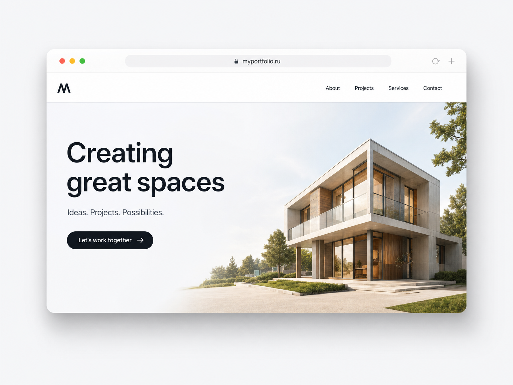
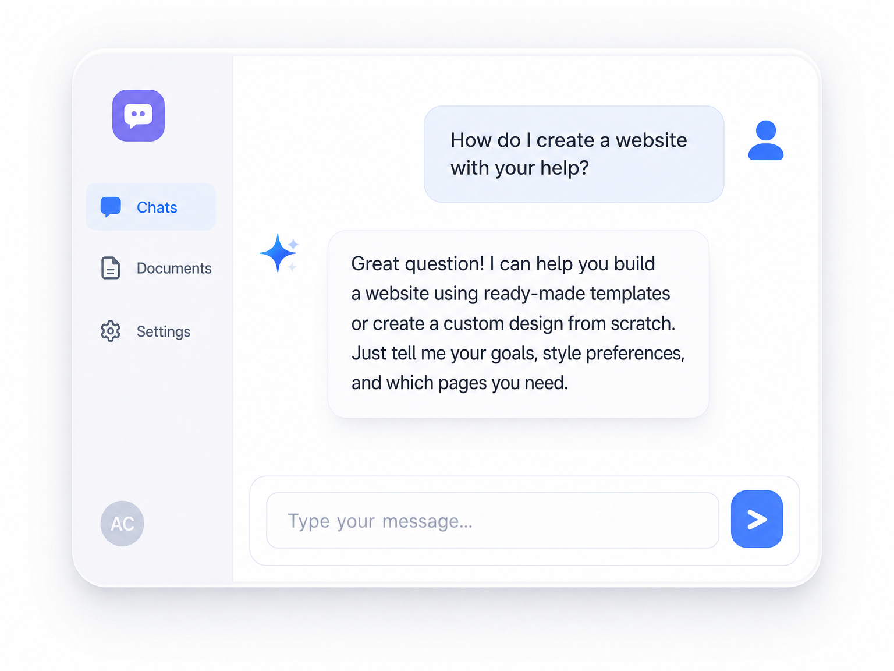
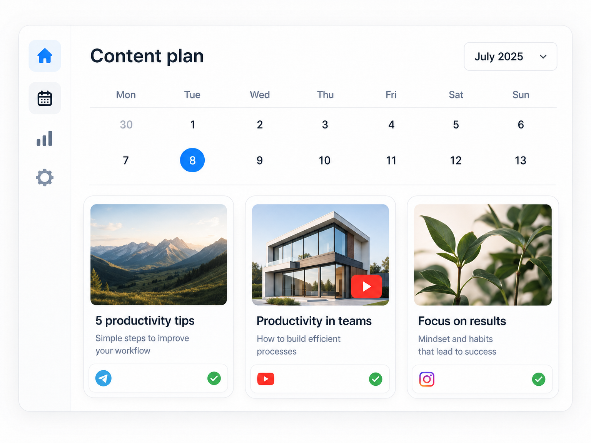
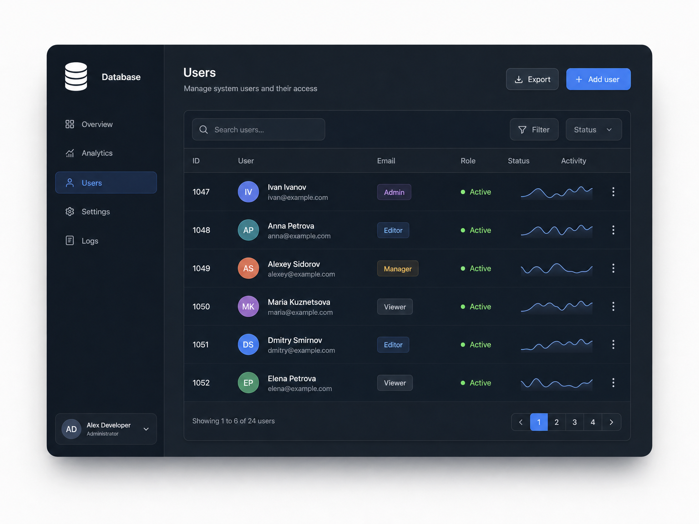
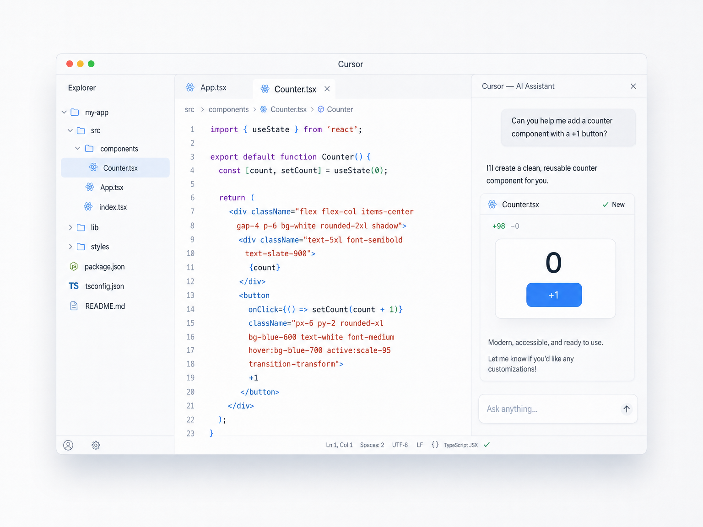
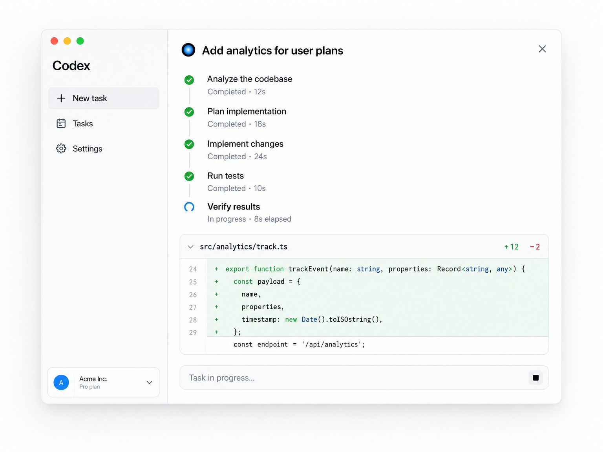
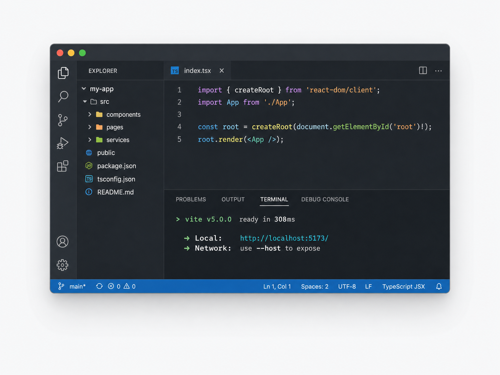
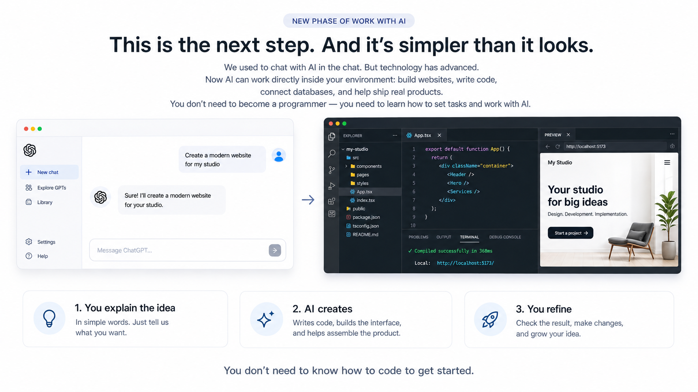
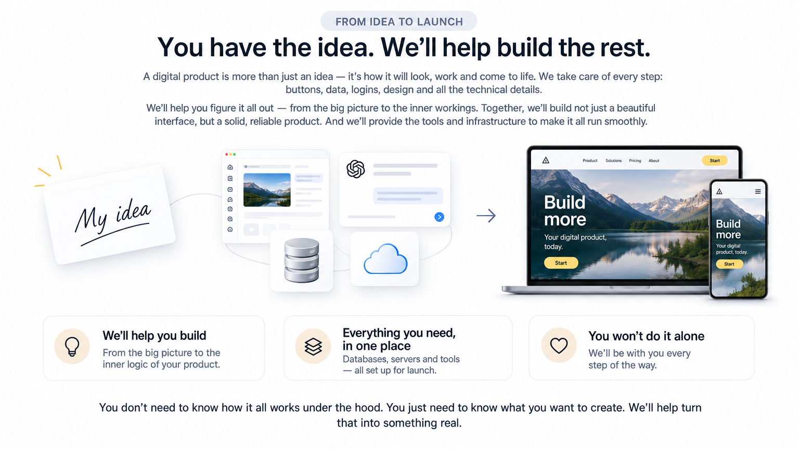

Сайты
Создавай сайты для себя, своего бизнеса, проектов и клиентов.
✨ Практический интенсив
Освой искусственный интеллект. Научись создавать сайты, приложения и собственные цифровые продукты.
От идеи до цифровых продуктов. Создавай, автоматизируй, развивай.
Начать создавать →Для начинающих · Без опыта программирования
Ещё недавно для создания сайта, приложения или собственного онлайн-сервиса требовались программисты, дизайнеры и технические специалисты. Сегодня искусственный интеллект позволяет одному человеку выполнять работу целой команды.

Создавай сайты для себя, своего бизнеса, проектов и клиентов.

Создавай интеллектуальных помощников, которые консультируют, отвечают на вопросы и выполняют задачи.

Создавай контент, визуалы и публикации. Автоматизируй работу с социальными сетями.

Разрабатывай внутреннюю логику приложений, подключай базы данных и создавай полноценные цифровые сервисы.
Осваивай передовые инструменты AI-разработки. Создавай настоящие сайты, приложения и цифровые продукты с помощью интеллектуальных сред разработки.



Работа с настоящим кодом
Создание frontend и backend
Работа с базами данных
Полный контроль над проектом
Новый этап работы с ИИ
Мы привыкли общаться с ИИ в чатах. Теперь он работает внутри среды разработки — и помогает собирать настоящие сайты и приложения. Без необходимости быть программистом.

Расскажи простыми словами, что хочешь создать.
Пишет код, собирает интерфейс и помогает собрать продукт.
Проверяешь результат, вносишь правки и развиваешь идею.
От идеи до запуска
Цифровой продукт — это не только красивая картинка. Нужны кнопки, данные, логика и запуск. С ИИ ты создаёшь рабочий продукт, а не просто макет страницы.

От внешнего вида до внутренней логики продукта.
Базы данных, серверы и инструменты для запуска.
Мы сопровождаем на каждом этапе пути.
Программа
Мини-курс по вайбкодингу для новичков: вместе пройдём путь от первой строчки кода до готового продукта, которым можно гордиться.
Преподаватель
Практик вайбкодинга и AI-разработки. Поможет настроить инструменты, разобрать ошибки и довести первый проект до публикации. Подставьте сюда фото и биографию преподавателя — блок уже готов к контенту.
Отзывы
«Думала, что код — не моё. За два занятия собрала лендинг для своей студии и выложила онлайн.»
«Раньше только писал промпты в чат. Теперь понимаю, как из идеи получается рабочий продукт.»
«Больше всего зашло про деплой и чат-бота — сразу пригодилось для маленького pet-проекта.»
Бонусы
После каждого занятия — практика, чтобы сразу закрепить материал.
Ссылки на статьи, видео, инструменты и сообщества для развития.
Можно задать вопросы наставнику и не остаться один на один со сложностями.
Помощь в оформлении первого проекта для демонстрации навыков.
Истории успеха и крутые проекты, созданные с помощью вайбкодинга.
FAQ
Нет. Интенсив рассчитан на новичков: идём от настройки среды до публикации сайта.
Мы учим создавать продукты внутри IDE: настоящий код, структура проекта, деплой и логика — не только текст в диалоге.
Пять занятий. На выходе — свой сайт онлайн, понимание бэкенда и навыки для чат-бота и SMM.
Редактор кода, GitHub, современные AI-среды вроде Cursor, а также базовые подходы к хостингу и данным.
Да: можно задавать вопросы, получать обратную связь и дополнительные материалы для развития.
Оставьте заявку в форме ниже — мы свяжемся и расскажем детали старта.
Старт рядом
Мечтаешь воплотить идеи и показать их миру? Этот мини-курс — первый шаг в вайбкодинг. Оставь заявку — и мы поможем начать.
Ответы ИИ · не замена консультации наставника